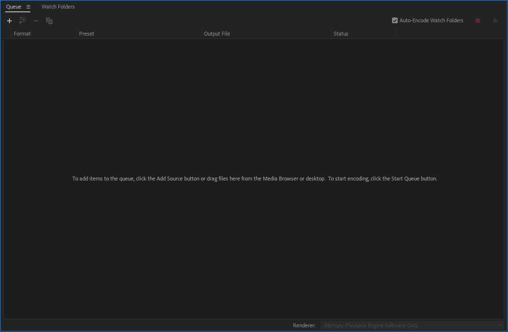

How to create a webpage using Brackets
First go into your folder and create a new folder in documents I prefer or wherever you want to put the folder, and name th folder Github Website.
Then you can go into that folder and create 2 new folders. One will be named CSS and the other one will be named Images. You also want to download a Text editor. (I prefer "Brackets")
Once you download the text editor, click on it or enter the app. Then you can delete all of the writing or introduction of Brackets. Then save that, name it Index and put it into the Github folder Then you need to go onto a website called "w3schools" and once you click the top link there will be an example on the right side of the page you want to copy that whole thing and paste it onto the blank page on your text editor.
And that is a basic tutorial on how to get started on a Text editor.
How to use Adobe Media Encoder
